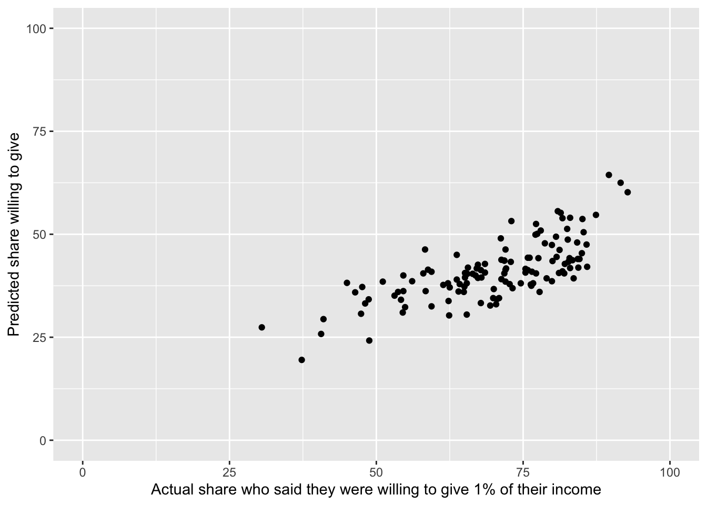
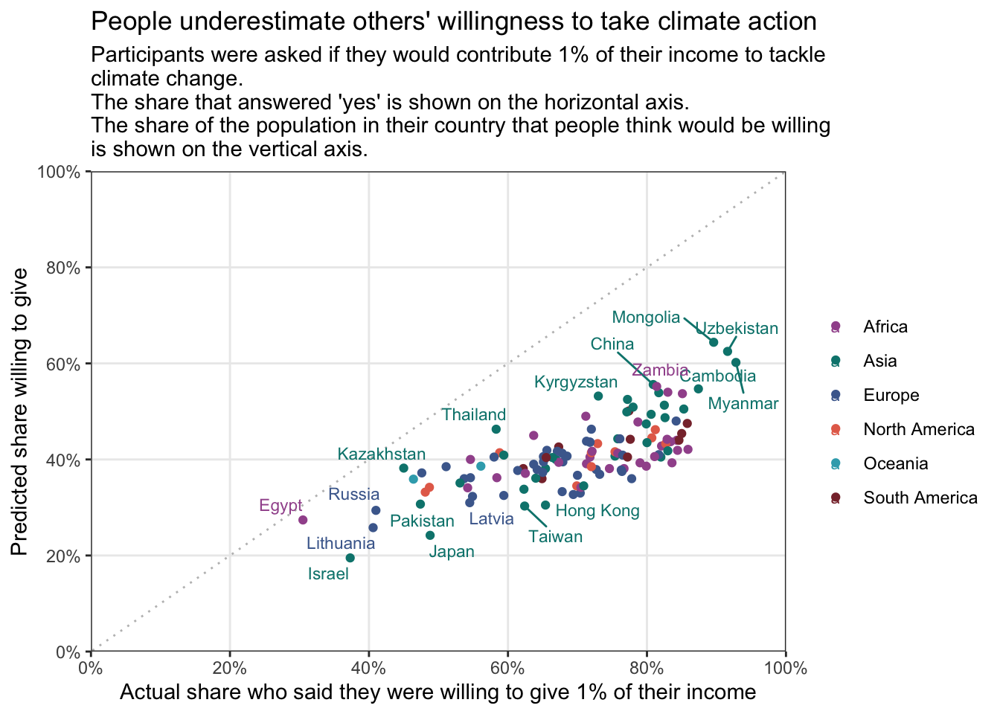

library(tidyverse)
library(here)
library(janitor)
library(scales)
library(ggeasy)
library(ggrepel)
library(plotly)day 1 fractions
This plot from Our World in Data illustrates the proportion of people who are willing to donate 1% of their income to climate change efforts as a function of people’s estimate of how many people in their country would be willing to donate.
As it turns out, people have a rather dim view of the likelihood that others would commit to supporting climate action. Lets see if we can reproduce the chart using ggplot.
load packages
read in the data
Here I am using the owidapi package to read in the data and reordering/renaming some variables before sorting the data by country and year.
willingness <- read_csv("https://ourworldindata.org/grapher/willingness-climate-action.csv?v=1&csvType=full&useColumnShortNames=true") %>%
clean_names() %>%
select(entity, code, owid_region, year,
prediction_others_willingness = willingness_contribute_1pct_climate_others,
self_willingness = willingness_contribute_pct_climate) %>%
arrange(entity, year)Rows: 397 Columns: 6
── Column specification ────────────────────────────────────────────────────────
Delimiter: ","
chr (3): Entity, Code, owid_region
dbl (3): Year, willingness_contribute_1pct_climate_others, willingness_contr...
ℹ Use `spec()` to retrieve the full column specification for this data.
ℹ Specify the column types or set `show_col_types = FALSE` to quiet this message.glimpse(willingness)Rows: 397
Columns: 6
$ entity <chr> "Afghanistan", "Afghanistan", "Aland Isl…
$ code <chr> "AFG", "AFG", "ALA", "ALB", "ALB", "DZA"…
$ owid_region <chr> "Asia", NA, "Europe", "Europe", NA, "Afr…
$ year <dbl> 2023, 2024, 2023, 2023, 2024, 2023, 2024…
$ prediction_others_willingness <dbl> NA, 40.5, NA, NA, 43.8, NA, 40.0, NA, NA…
$ self_willingness <dbl> NA, 82.0, NA, NA, 71.3, NA, 54.6, NA, NA…clean up the data
Looks like the plot only includes 2024 data, so lets filter first.
willingness2024 <- willingness %>%
filter(year == 2024)
glimpse(willingness2024)Rows: 126
Columns: 6
$ entity <chr> "Afghanistan", "Albania", "Algeria", "Ar…
$ code <chr> "AFG", "ALB", "DZA", "ARG", "ARM", "AUS"…
$ owid_region <chr> NA, NA, NA, NA, NA, NA, NA, NA, NA, NA, …
$ year <dbl> 2024, 2024, 2024, 2024, 2024, 2024, 2024…
$ prediction_others_willingness <dbl> 40.5, 43.8, 40.0, 38.1, 40.7, 38.6, 37.9…
$ self_willingness <dbl> 82.0, 71.3, 54.6, 62.2, 75.4, 56.1, 72.7…Unfortunately in filtering out the 2023 data, I have also lost information about the owid region, which is used in colouring the dots in the plot. I need to go back to the dataset that has regions for 2023 and have them propogate into the 2024 rows as well.
This chunk groups the data by country and then mutates a new column to contain new region values. It looks just at 2023 rows and pulls the first value of region from those. Then we can filter for just 2024 values.
willingness2024 <- willingness %>%
group_by(entity) %>%
mutate(region = first(owid_region[year == 2023])) %>%
select(starts_with("entity"), region, year, ends_with("willingness")) %>%
filter(year == 2024)
glimpse(willingness2024)Rows: 126
Columns: 5
Groups: entity [126]
$ entity <chr> "Afghanistan", "Albania", "Algeria", "Ar…
$ region <chr> "Asia", "Europe", "Africa", "South Ameri…
$ year <dbl> 2024, 2024, 2024, 2024, 2024, 2024, 2024…
$ prediction_others_willingness <dbl> 40.5, 43.8, 40.0, 38.1, 40.7, 38.6, 37.9…
$ self_willingness <dbl> 82.0, 71.3, 54.6, 62.2, 75.4, 56.1, 72.7…make a basic plot
willingness2024 %>%
ggplot(aes(y = prediction_others_willingness, x = self_willingness)) +
geom_point() +
scale_y_continuous(limits = c(0,100)) +
scale_x_continuous(limits = c(0,100)) +
labs(y = "Predicted share willing to give",
x = "Actual share who said they were willing to give 1% of their income") 
OK, basic plot success… things that I need to change
- axis values in 20% increments with %
- theme needs to be white background with dotted gridlines on 20% values
- diagonal dotted line
- colour points by region
- include text of selection of countries
- caption re data source
- title and subtitle
- plotly interactivity
gridlines and axes
Here I am using the expand and breaks arguments within scale_y_continuous and scale_x_continuous to make the axis start at 0,0 and have 20% increments. I get % labels on each access using the percent_format() function from the scales package (accuracy = 1 tells R I want it to display whole numbers and scale = 1 tells R my numbers are already percentages and don’t need to be multiplied by 100).
I removed the minor gridlines using easy_remove_gridlines() from the ggeasy package. I also added a diagonal line usinggeom_abline().
willingness2024 %>%
ggplot(aes(y = prediction_others_willingness, x = self_willingness)) +
geom_point() +
scale_y_continuous(labels = percent_format(accuracy = 1, scale = 1),
limits = c(0,100), expand = c(0,0), breaks = seq(0,100,20)) +
scale_x_continuous(labels = percent_format(accuracy = 1, scale = 1),
limits = c(0,100), expand = c(0,0), breaks = seq(0,100,20)) +
labs(y = "Predicted share willing to give",
x = "Actual share who said they were willing to give 1% of their income") +
theme_bw() +
easy_remove_gridlines(axis = "both", minor = TRUE, major = FALSE) +
geom_abline(
slope = 1,
intercept = 0,
color = "grey",
linetype = "dotted")colours and text
Adding colour by region makes me realise that there is a row that entity == World, which doesn’t have a region. I need to filtered the World out to avoid an NA category.
I want to use the same colours as the OWID plot. The ColorZilla web extension allows you to use a dropper to get the specific # codes for each colour on any plot on the internet- handy!
I have used scale_colour_manual() to set the colours and added a title and subtitle using labs and removed the legend title using a function from the ggeasy package. I have added some country labels, while trying to avoid overlapping the point using the geom_text_repel() function from the ggrepel package. It does give me a warning that there are too many overlapping points though.
willingness2024 %>%
filter(entity != "World") %>%
ggplot(aes(y = prediction_others_willingness, x = self_willingness, colour = region)) +
geom_point() +
scale_y_continuous(labels = percent_format(accuracy = 1, scale = 1),
limits = c(0,100), expand = c(0,0), breaks = seq(0,100,20)) +
scale_x_continuous(labels = percent_format(accuracy = 1, scale = 1),
limits = c(0,100), expand = c(0,0), breaks = seq(0,100,20)) +
labs(y = "Predicted share willing to give",
x = "Actual share who said they were willing to give 1% of their income",
title = "People underestimate others' willingness to take climate action",
subtitle = "Participants were asked if they would contribute 1% of their income to tackle \nclimate change. \nThe share that answered 'yes' is shown on the horizontal axis. \nThe share of the population in their country that people think would be willing \nis shown on the vertical axis.") +
theme_bw() +
easy_remove_gridlines(axis = "both", minor = TRUE, major = FALSE) +
geom_abline(
slope = 1,
intercept = 0,
color = "grey",
linetype = "dotted") +
scale_colour_manual(values = c("#a2559b", "#00847d", "#4b6a9c", "#e56e59", "#38aaba", "#883039")) +
easy_remove_legend_title() +
geom_text_repel(aes(label = entity), size = 3, max.overlaps = 20)
interactivity
The plotly packages allows for much of the same kind of interactivity that the grapher tool allows on Our World in Data. Here I have added an extra text argument to the ggplot aes to make the hover option display the country associated with each point, as well as the variables that were mapped. By assigning the ggplot to an object and then using the ggplotly() function, we can produce an interactive plot.
plot <- willingness2024 %>%
filter(entity != "World") %>%
ggplot(aes(y = prediction_others_willingness, x = self_willingness,
colour = region, text = paste("country:", entity))) +
geom_point() +
scale_y_continuous(labels = percent_format(accuracy = 1, scale = 1),
limits = c(0,100), expand = c(0,0), breaks = seq(0,100,20)) +
scale_x_continuous(labels = percent_format(accuracy = 1, scale = 1),
limits = c(0,100), expand = c(0,0), breaks = seq(0,100,20)) +
labs(y = "Predicted share willing to give",
x = "Actual share who said they were willing to give 1% of their income",
title = "People underestimate others' willingness to take climate action",
subtitle = "Participants were asked if they would contribute 1% of their income to tackle climate change. \nThe share that answered 'yes' is shown on the horizontal axis. The share of the population \nin their country that people think would be willing is shown on the vertical axis.") +
theme_bw() +
theme(panel.grid.minor = element_blank()) +
geom_abline(
slope = 1,
intercept = 0,
color = "grey",
linetype = "dotted") +
scale_colour_manual(values = c("#a2559b", "#00847d", "#4b6a9c", "#e56e59", "#38aaba", "#883039")) +
easy_remove_legend_title()
interactive_plot <- ggplotly(plot)
interactive_plot